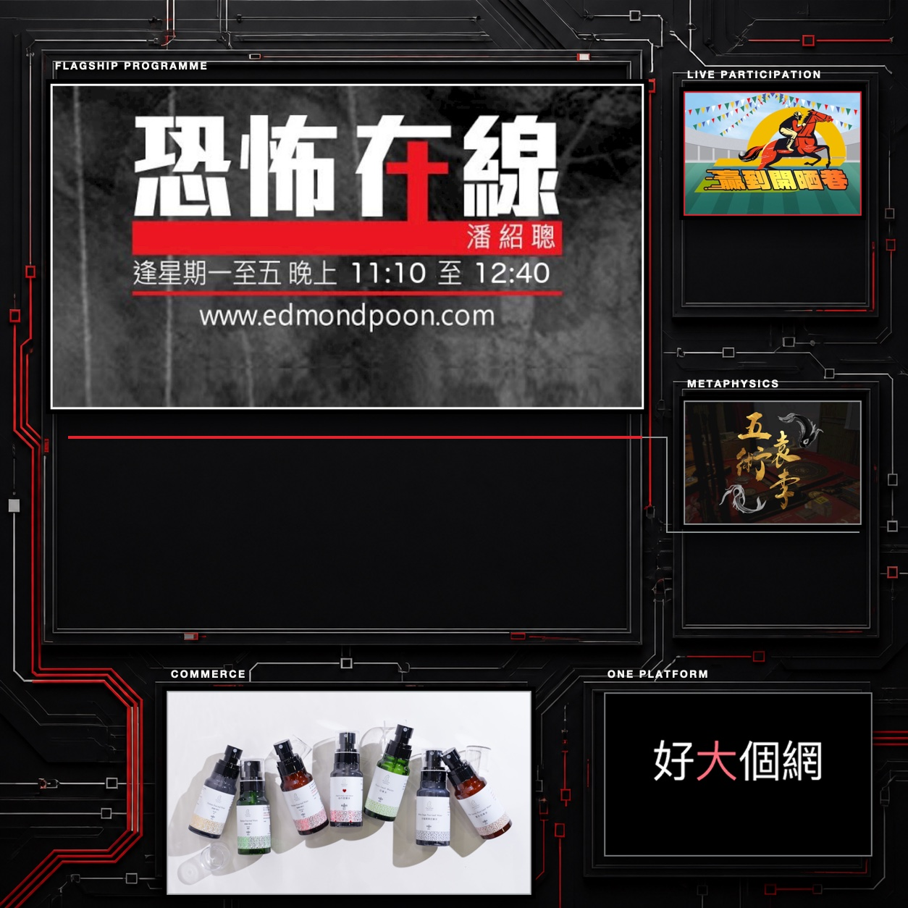
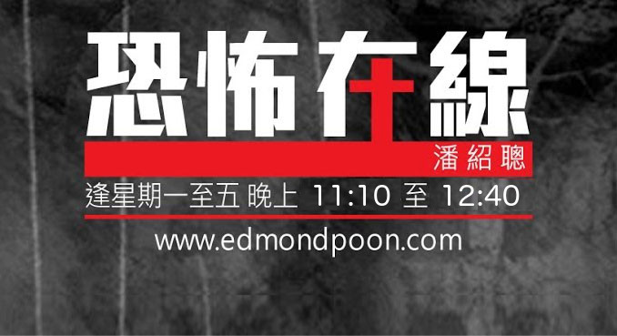

edmondpoon.com · Content platform & spiritual services
From Horror Online to a whole platform.
As Chief UX Designer, I evolved the experience around 恐怖在線 into a broader destination for programmes, episodes and live participation—then connected that audience to editorial, commerce and trusted specialist services.
Explore the screen-flow library
The product challenge
The platform grew from a strong media foundation led by 恐怖在線 into a wider destination for paranormal, metaphysical, feng shui and mind-body-spirit content. That growth created depth, but also made discovery and orientation more complex.
Viewers might arrive for a live programme or episode, then join a chatroom, use the 贏到開晒巷 analysis tool, read 子時, shop, discover a master through 好大個玄機, or continue into infrared and tongue-reading services. The experience needed to connect those paths without allowing secondary features to overwhelm the content.
How can content remain the front door while participation, commerce and services become natural next steps?
Visit the live platform →Designing a content-led hub
Make programmes and episodes the primary model
I organised the experience around a clear media hierarchy: discover a programme, understand its identity, move through episodes and return to what is new, live or saved. Strong programme artwork and predictable content patterns let very different shows feel part of the same destination without losing their individual character.
Turn viewing into participation
Live chat, membership, gifts and the 贏到開晒巷 analysis tool transform passive viewing into an active community experience. I worked across access, entitlement and in-room states so these features support the programme instead of competing with it.
Let interest continue beyond the episode
子時 online magazine, the shop, advertising system, 好大個玄機 master platform, infrared imaging and Read Tongue (讀舌) form a supporting layer around media. Contextual entry points connect relevant content to reading, products or professional guidance while shared account and transaction patterns preserve continuity.
How I shaped the product
Translate a growing catalogue into a mental model
I translated programmes, episodes, editorial content, live rooms, products and services into a platform structure audiences could learn once and reuse. Feature decisions were evaluated against that wider model rather than designed as isolated launches.
Give each content world its own identity
Shared navigation, playback, access and transaction patterns create continuity. Artwork, tone and content hierarchy allow 恐怖在線, 贏到開晒巷 and specialist formats to remain recognisable within the same ecosystem.
Design for both audience value and operation
My ownership covered product framing, UX/UI, commercial placements, cross-functional handoff and launch QA. This kept audience journeys, content operations, advertising and service fulfilment connected as the platform evolved.
Horror Online is the front door.
Shows and episodes lead. Every surrounding feature earns its place by helping audiences participate, go deeper or take a trusted next step.

What the work proves
- Content architecture: programmes, episodes and live moments form a clear foundation for discovery and return use
- Ecosystem orchestration: participation, advertising, commerce and specialist services extend audience intent without displacing the core content
- Product leadership: reusable interaction and operational patterns let new content worlds and features scale without becoming separate products